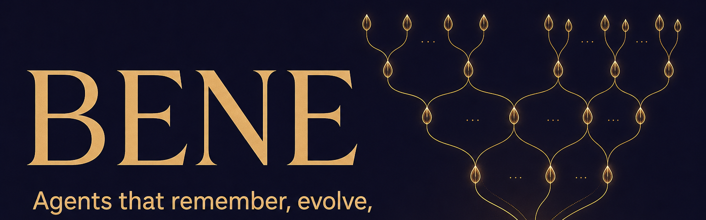

<!DOCTYPE html>
<html lang="en">
<head>
<meta charset="UTF-8" />
<meta name="viewport" content="width=device-width, initial-scale=1.0" />
<title>BENE — Breeding-program · Evolutionary · Nexus · Engrams</title>
<meta name="description" content="BENE: a local-first multi-agent orchestration framework. One SQLite file. Every agent isolated, auditable, restorable." />
<link rel="icon" href="assets/bene-logo.png" />
<link href="https://fonts.googleapis.com/css2?family=Inter:wght@300;400;500;600&family=JetBrains+Mono:wght@400;500&family=Playfair+Display:ital,wght@0,400;0,600;1,400&display=swap" rel="stylesheet" />
<script src="https://unpkg.com/react@18/umd/react.production.min.js" crossorigin></script>
<script src="https://unpkg.com/react-dom@18/umd/react-dom.production.min.js" crossorigin></script>
<script src="https://unpkg.com/@babel/standalone/babel.min.js"></script>
<script src="https://cdn.tailwindcss.com"></script>
<script>
// Light theme — warm off-white canvas, deep ink, single warm dune-amber accent.
// Terminals stay dark (an authentic terminal is a dark terminal).
tailwind.config = {
  theme: {
    extend: {
      colors: {
        dune: {
          bg: '#FAF6F0',       // warm off-white canvas
          surface: '#F2EAD9',  // raised cards, hero band
          border: '#E0D4BC',   // hairlines
          ink: '#1F1A14',      // primary text (near-black, warm)
          mute: '#5C5448',     // secondary text
          sand: '#1F1A14',     // alias — used widely as primary text in markup
          accent: '#C2541B',   // warm amber accent (single)
          gold: '#A0531C',     // darker accent for AA contrast on light
        },
        term: {
          bg: '#0E0B16',       // dark terminal background
          fg: '#E8DCC2',       // terminal foreground
          dim: '#7C7464',      // dim terminal text
        },
      },
      fontFamily: {
        sans: ['Inter', 'sans-serif'],
        mono: ['JetBrains Mono', 'monospace'],
        serif: ['Playfair Display', 'serif'],
      },
    },
  },
}
</script>
<style>
body { background-color: #FAF6F0; color: #1F1A14; font-family: 'Inter', sans-serif; }
.noise-bg { position: relative; }
.noise-bg::before {
  content: ""; position: fixed; top: 0; left: 0; width: 100vw; height: 100vh;
  opacity: 0.025; pointer-events: none; z-index: 50;
  background-image: url("data:image/svg+xml,%3Csvg viewBox='0 0 200 200' xmlns='http://www.w3.org/2000/svg'%3E%3Cfilter id='noiseFilter'%3E%3CfeTurbulence type='fractalNoise' baseFrequency='0.8' numOctaves='3' stitchTiles='stitch'/%3E%3C/filter%3E%3Crect width='100%25' height='100%25' filter='url(%23noiseFilter)'/%3E%3C/svg%3E");
}
::-webkit-scrollbar { width: 6px; }
::-webkit-scrollbar-track { background: #F2EAD9; }
::-webkit-scrollbar-thumb { background: #C2B898; border-radius: 3px; }
::-webkit-scrollbar-thumb:hover { background: #C2541B; }
.litany-text { text-shadow: none; }
</style>
</head>
<body>
<div id="root"></div>
<script type="text/babel" data-presets="react">
const { useState, useEffect } = React;

// ─── Bilingual dictionary ───────────────────────────────────────────
const dict = {
  en: {
    nav: { landing: 'Landing', docs: 'Docs', reference: 'Reference', github: 'GitHub' },
    hero: {
      title: 'Run AI coding agents you can rewind, diff, and replay.',
      forWho: 'For engineers whose agents break things they can’t undo.',
      trustLine: 'The whole harness is one SQLite file you can cp or git diff. No API keys. No cloud.',
      tagline: 'Every agent isolated, every turn checkpointed, and you can re-run every claim.',
      stats: ['rewind a broken turn in one command', 'works with Claude Code, Cursor, Aider', '37 MCP tools'],
      ctaCode: '# runs for everyone, today:\ngit clone https://github.com/EdwardTang/bene-site && cd bene-site\nless docs/design/CLAIMS-AUDIT.md            # the receipts, readable offline\n# framework checkout (private preview):\nuv run bene init && uv run bene demo --no-ui   # 0.3s, zero keys — the GIF below',
    },
    sections: {
      watch: {
        kicker: '01 · SEE FOR YOURSELF',
        title: 'Check this page\u2019s claims on your laptop, in under a minute.',
        body: 'One command, no API keys, no account, no cloud. bene demo --no-ui replays the kernel\u2019s whole story locally \u2014 traces compressed, a strategy evolved, a probe kill-gated, an over-permissioned action denied, a trust score computed. It happens to finish in 0.3 seconds, but speed isn\u2019t the point: the point is nothing stands between you and verifying what we claim.',
        demo: 'assets/demos/demo-keyless.gif',
        caption: 'Recorded live against bene-main HEAD. No edits.',
      },
      builders: {
        kicker: '01.5 · WHY THIS MATTERS FOR BUILDERS',
        title: 'Context Engineering as a SQLite file.',
        body: 'Every checkpointed turn is a scratchpad your next agent can read. Engrams are lessons-learned that compound across sessions. Skills propagate between agents before they are needed. This is the scratchpad + lessons-learned + persistent-memory triad — wired together, on disk, one file.',
      },
      rewind: {
        kicker: '02 · REWIND A BAD TURN',
        title: 'An agent broke production. One command puts it back.',
        body: 'Every write is checkpointable, every diff is offline, every restore is one verb. The agent scaled replicas: 3 → 0 (an outage). You see exactly what it touched, then roll back to green.',
        demo: 'assets/demos/demo-litany.gif',
        caption: 'No git, no live service, no cloud. The whole rewind is the local SQLite file.',
      },
      receipts: {
        kicker: '03 · EVERY CLAIM HAS RECEIPTS',
        title: 'Your tech lead can rerun every check.',
        body: 'Probe specs are sha256-locked before any run. Every gate has an ACCEPT or REJECT verdict with the numbers it tripped. New agents read a manifest of what is already known instead of starting blind.',
        demo: 'assets/demos/demo-honesty.gif',
        caption: 'experiments ls → experiments show → senses --md: the audit trail and briefing a connected agent inherits.',
        links: [
          { label: 'PREREG.md (sha256-locked protocol)', href: 'https://github.com/EdwardTang/bene-site/blob/main/docs/benchmarks/PREREG.md' },
          { label: 'CLAIMS-AUDIT.md (every claim, file + test)', href: 'https://github.com/EdwardTang/bene-site/blob/main/docs/design/CLAIMS-AUDIT.md' },
          { label: 'RIVAL-BENCH-REPORT.md (rounds 1–3, locked rule)', href: 'https://github.com/EdwardTang/bene-site/blob/main/docs/benchmarks/RIVAL-BENCH-REPORT.md' },
        ],
      },
      interop: {
        kicker: '04 · DROP INTO TOOLS YOU ALREADY USE',
        title: 'Claude Code. Cursor. Aider. Any MCP-compatible agent.',
        body: '37 tools over MCP, stdio transport, one line in your agent config. Every CLI surface is reachable the same way over --json (pipe to jq). No glue code; no N×M integration tax.',
        snippet: 'claude mcp add bene -- uv run bene serve --transport stdio',
        capabilities: [
          'checkpoint its own turns and restore on bad output, without you reaching for git.',
          'search engrams from past sessions as RAG context — lessons-learned that compound.',
          'gate its own claims behind falsifiable probes before reporting done.',
        ],
        capabilitiesLede: 'Your Claude Code (or Cursor / Aider) now can:',
      },
      build: {
        kicker: '04.5 · BUILD YOUR FIRST AUDITABLE AGENT',
        title: 'Three recipes, run before publishing.',
        body: 'Each recipe runs inside a framework checkout (private preview) against a fresh bene.db. Agents are created via the Python API or the MCP tools (agent_spawn / agent_write); the rewind verbs are plain CLI. Adapt the variables to your task; the harness mechanics stay the same.',
        recipes: [
          {
            title: 'Wrap a flaky shell script as a checkpointed agent',
            getYou: 'git revert for runtime: every run is a checkpoint, every diff is offline, you roll back to the green build in one command.',
            code: '# seed the agent (Python API — spawn/write are not CLI verbs):\nAID=$(uv run python -c "from bene import Bene; b=Bene(\'bene.db\'); a=b.spawn(\'runbook\'); b.write(a,\'/run.sh\',open(\'my_pipeline.sh\',\'rb\').read()); print(a)")\nuv run bene checkpoint $AID --label green\n# ... let your agent edit /run.sh ...\nuv run bene checkpoints $AID                       # find the two checkpoint ids\nuv run bene diff $AID --from <green-cp> --to <after-cp>\nuv run bene restore $AID --checkpoint <green-cp>   # back to green',
          },
          {
            title: 'Read a kill-gated verdict end-to-end',
            getYou: 'the full audit trail behind every ACCEPT: specs locked before the run, verdicts with the numbers they tripped, re-readable months later.',
            code: 'uv run bene probe ls                  # registered probes (spec hash + status)\nuv run bene probe show <name>         # the locked kill gates, gate by gate\nuv run bene experiments ls            # probe / evolution / consolidation journal\nuv run bene experiments show <run-id> # one verdict: ACCEPT / REJECT / VOID + numbers\n# probe AUTHORING (create/run) lives in the framework — a probe-authoring CLI\n# is on the roadmap below; verdict reading works today as shown in Demo 3.',
          },
          {
            title: 'Give Claude Code a persistent scratchpad + lessons-learned via MCP',
            getYou: 'compounding context: every session writes engrams; every new session searches them first and inherits what worked.',
            code: 'claude mcp add bene -- uv run bene serve --transport stdio\n# Your agent now has (real tool names from the 37):\n#   agent_memory_search → past sessions\' engrams as RAG context\n#   agent_checkpoint / agent_restore → rewind a bad turn, no git stash\n#   agent_spawn / agent_write → isolated sub-agents with their own VFS',
          },
        ],
      },
      candor: {
        kicker: '05 · TODAY VS SOON',
        title: 'The receipts run today. The breeding program is next.',
        todayHead: 'Today (public — receipts repo and the three demos above):',
        todayCode: 'git clone https://github.com/EdwardTang/bene-site\nless bene-site/docs/design/DESIGN-RATIONALE.md       # the 10 hard calls\nless bene-site/docs/benchmarks/RIVAL-BENCH-REPORT.md  # locked-rule verdict\nless bene-site/docs/design/CLAIMS-AUDIT.md            # every claim, traced',
        soonHead: 'Soon (hosted evolutionary / meta-harness search — opt-in, private preview):',
        soonCode: '# The local SQLite + MCP surface stays the contract.\n# Soon: a hosted service for breeding/evolutionary search across generations.\nuv run bene mh search   # local today; opt-in hosted soon',
      },
      origin: {
        kicker: 'WHY THE NAME (BENE GESSERIT)',
        body: 'BENE is a backronym (Breeding-program · Evolutionary · Nexus · Engrams), but the better answer is that the Bene Gesserit are Frank Herbert\'s order of patient strategists who make agents act without fear by giving them a way to face failure, let it pass, and remain. That is the loop: checkpoint, diff, restore. The motif is a frame, not a moat — every Dune name has a plain noun behind it (Other Memory → searchable execution traces; Litany Against Fear → checkpoint/diff/restore; The Breeding Program → evolutionary meta-harness search).',
        litany: 'I must not fear. Fear is the mind-killer. Fear is the little-death that brings total obliteration. I will face my fear. I will permit it to pass over me and through me. And when it has gone past I will turn the inner eye to see its path. Where the fear has gone there will be nothing. Only I will remain.',
      },
    },
    footer: 'BENE 0.2.0 · local-first · SQLite · built in the open',
    footerCommunity: 'Building something on bene? Open a Discussion on the repo — we read every one.',
    footerCommunityHref: 'https://github.com/EdwardTang/bene-site/discussions',
    docs: {
      fullRef: 'Open the full docs library — all 37 pages \u2192',
      nav: { quickstart: 'Start', core: 'Jobs', cli: 'Operate', mcp: 'Connect agents', research: 'Evidence', arch: 'Internals', roadmap: 'Status' },
      quickstart: {
        title: 'Start from a clean checkout',
        desc: 'The first docs path is intentionally keyless: clone, sync, initialize one SQLite file, run the demo, then inspect the honesty surface. Requires Python 3.11+ and uv.',
        steps: [
          { run: 'git clone https://github.com/EdwardTang/bene-site && cd bene-site', say: 'The site repo carries the full receipts trail, readable offline. Demo 1 above ran in this exact directory.' },
          { run: 'uv sync', say: 'Install dependencies (uv resolves + caches in seconds).' },
          { run: 'uv run bene init', say: 'Create a fresh bene.db in the current directory.' },
          { run: 'uv run bene demo --no-ui', say: 'The kernel story in one run — 0.3s, zero keys. This is exactly Demo 1 on the landing page.' },
          { run: 'uv run bene experiments ls && uv run bene senses --md', say: 'See the kill-gate journal, then the briefing an incoming agent reads first (Demo 3 on the landing page).' },
        ],
        gifNote: 'Demo 1 — keyless first value, recorded live against bene-main HEAD:',
        gifSrc: 'assets/demos/demo-keyless.gif',
      },
      core: {
        title: 'What the docs help you do',
        items: [
          { name: 'Start local', gloss: 'README + deployment', desc: 'Install with uv, create bene.db, run the keyless demo, and know which commands prove the setup is alive.' },
          { name: 'Rewind bad turns', gloss: 'checkpoints + CLI', desc: 'Create checkpoints before risky work, diff what changed, and restore one agent without touching sibling state.' },
          { name: 'Keep durable knowledge', gloss: 'memory + shared log + skills', desc: 'Write memories, coordinate decisions through intent/vote/decide, and save reusable skills that outlive a single run.' },
          { name: 'Connect existing agents', gloss: 'MCP + --json', desc: 'Expose the same local state through 37 MCP tools or scriptable JSON CLI output, with read-only SQL for inspection.' },
          { name: 'Evolve and verify', gloss: 'meta-harness + probes', desc: 'Run searches, inspect frontiers, and promote only artifacts that pass falsifiable kill gates.' },
        ],
      },
      cli: {
        title: 'Operate from the terminal',
        desc: 'Every command supports --json when piped. The full reference is grouped by the job you are doing, not by alphabet.',
        gifNote: 'Demo 2 — rewind a bad agent turn (the Litany loop, live):',
        gifSrc: 'assets/demos/demo-litany.gif',
        groups: [
          { name: 'Setup & inspect', cmds: ['init', 'ls', 'logs', 'query'] },
          { name: 'Rewind a bad turn (checkpoint / diff / restore)', cmds: ['checkpoint', 'diff', 'restore'] },
          { name: 'Knowledge that outlives the agent', cmds: ['memory', 'skills', 'log'] },
          { name: 'Evolve a better harness', cmds: ['mh search', 'mh frontier', 'mh resume'] },
          { name: 'Honesty surfaces (Demo 3)', cmds: ['experiments ls', 'experiments show', 'senses --md', 'trust', 'demo --no-ui'] },
        ],
      },
      mcp: {
        title: 'Connect the agent you already use',
        desc: '37 tools over MCP / stdio give Claude Code and other MCP clients the same local state: agents, VFS, checkpoints, SQL, memory, shared log, skills, and meta-harness search.',
        run: 'claude mcp add bene -- uv run bene serve --transport stdio',
        note: 'One line for Claude Code; same idea for Cursor / Aider / any MCP-compatible agent. Details in the rewritten MCP guide.',
        href: 'https://github.com/EdwardTang/bene-site/blob/main/docs/mcp-integration.md',
        gifNote: 'Demo 3 — the honesty surface a connected agent inherits:',
        gifSrc: 'assets/demos/demo-honesty.gif',
      },
      research: {
        title: 'Read the receipts before the claims',
        desc: 'The research and benchmark docs separate implemented behavior from planned work, with paper links, gates, and measured limits.',
        href: 'https://github.com/EdwardTang/bene-site/blob/main/docs/research/SYNTHESIS.md',
        cta: 'Read SYNTHESIS.md (48 citations, 47 distinct papers) →',
        sample: [
          { paper: 'Meta-Harness (Stanford IRIS)', pillar: 'Evolutionary meta-harness (the breeding program)' },
          { paper: 'SkillX, SkillClaw, Trace2Skill', pillar: 'Skill + memory propagation (Missionaria Protectiva)' },
          { paper: 'AEVO (verifier isolation)', pillar: 'Kill-gated promotion' },
          { paper: 'AHE — Agentic Harness Engineering', pillar: 'Harness engineering + evolution' },
          { paper: 'Lost in Conversation, RF-Mem, MemGAS', pillar: 'Context OS + pollution recovery' },
        ],
      },
      arch: {
        title: 'How the runtime hangs together',
        desc: 'Trace one request from MCP or CLI input through CCR, Tier routing, tool execution, events, checkpoints, and the SQLite schema that carries the whole runtime.',
        href: 'https://github.com/EdwardTang/bene-site/blob/main/docs/architecture.md',
        cta: 'Read architecture.md (request flow, storage, isolation, and router internals) →',
      },
      roadmap: {
        title: 'Shipped vs planned',
        headers: ['Feature', 'Status'],
        rows: [
          { feature: 'Kernel, probes, kill-gated promotion', status: 'Shipped', shipped: true },
          { feature: 'Trust ledger, ContextOS', status: 'Shipped', shipped: true },
          { feature: 'Outcome-weighted retrieval, critical-step localizer, continuous-quality signal', status: 'Shipped', shipped: true },
          { feature: 'Probe-authoring CLI (probe create / probe run)', status: 'Planned', shipped: false },
          { feature: 'Nightly consolidation scheduler', status: 'Planned', shipped: false },
          { feature: 'Runner wiring, deterministic replay', status: 'Planned', shipped: false },
        ],
      },
    },
  },
  zh: {
    nav: { landing: '主页', docs: '文档', reference: '文档库', github: '源码' },
    hero: {
      title: 'agent 把生产改炸的那 30 秒，可以倒回来。',
      forWho: '上一次 agent 改炸 prod、你 git stash 一回头发现栈是空的——这工具写给你。',
      trustLine: 'agent 这一 turn 写过的代码、读过的文件、跑过的 probe，全 append 到 `bene.db`。`cp` 留底，`sqlite3` 当场查，不联网。',
      tagline: '写入前 `bene checkpoint`，diff 在本地，restore 退一 turn——不是 git ritual，是一条命令。',
      stats: ['一条命令倒带一次坏 turn', '兼容 Claude Code / Cursor / Aider', '37 个 MCP 工具'],
      ctaCode: '# 任何人今天就能跑：\ngit clone https://github.com/EdwardTang/bene-site && cd bene-site\nless docs/design/CLAIMS-AUDIT.md            # 凭据链，可离线读\n# 框架 checkout（私有预览）里：\nuv run bene init && uv run bene demo --no-ui   # 0.3 秒，零密钥 —— 即下方 GIF',
    },
    sections: {
      watch: {
        kicker: '01 · 眼见为实',
        title: '上次试新工具光填 API key 就 12 分钟。这一页不那样。',
        body: '`bene demo --no-ui`，0.3 秒跑完。不用 key，不注册，不联网。trace 在你机器上压缩了一次，probe 真的去过 kill-gate，越权动作真的被拒了，信任分数真的算出来了——不是 staged 视频，是命令在你笔记本上的输出。',
        demo: 'assets/demos/demo-keyless.gif',
        caption: '对当前 bene-main HEAD 实跑录制，未做剪辑。',
      },
      builders: {
        kicker: '01.5 · 这对 Builder 意味着什么',
        title: '别的 harness 教 agent 怎么记忆；BENE 教 agent 怎么被审计。',
        body: '你把 lessons-learned 塞进 prompt——下一个 session 的 agent 看不见；你写到临时文件——它不知道哪份是最新；你写到文档——它根本不读。这三件事 append 到 `bene.db`：下一个 agent 进来 `grep` 一遍上一个 agent 在哪一 turn 改了哪一行、为什么改、跑没跑过 probe——证据链，不是 context。',
      },
      rewind: {
        kicker: '02 · 倒带一次失败的智能体动作',
        title: 'agent 把生产改炸了。一条命令退回去。',
        body: 'agent 把 replicas 从 3 改成 0。`git stash` 没用——它写的是 helm values，不在你 tree 里。`git revert` 也没用——那不是一次 commit。`bene restore <checkpoint>` 把它写过的字节倒回去，并告诉你它在哪一 turn、读了什么、为什么决定这么改。',
        demo: 'assets/demos/demo-litany.gif',
        caption: '不靠 git、不靠在线服务、不靠云。整条 rewind 就在那份本地 SQLite 里。',
      },
      receipts: {
        kicker: '03 · 所有声明都有凭据',
        title: '你的 tech lead 不必相信我们。他自己花 40 秒重跑一遍就行。',
        body: 'clone repo，`uv run bene probe verify`：ACCEPT 或 REJECT 都带着触发它的那个数值一起打印出来——spec 的 `sha256` 在跑之前就锁了，谁都改不了分。要是他不信任这些数，他根本不需要信任我们。',
        demo: 'assets/demos/demo-honesty.gif',
        caption: 'experiments ls → experiments show → senses --md：接进来的智能体继承到的审计链与简报。',
        links: [
          { label: 'PREREG.md （sha256 锁定的协议）', href: 'https://github.com/EdwardTang/bene-site/blob/main/docs/benchmarks/PREREG.md' },
          { label: 'CLAIMS-AUDIT.md （每条声明对应文件+测试）', href: 'https://github.com/EdwardTang/bene-site/blob/main/docs/design/CLAIMS-AUDIT.md' },
          { label: 'RIVAL-BENCH-REPORT.md （第 1–3 轮，锁定规则）', href: 'https://github.com/EdwardTang/bene-site/blob/main/docs/benchmarks/RIVAL-BENCH-REPORT.md' },
        ],
      },
      interop: {
        kicker: '04 · 接进你已经在用的工具',
        title: 'Claude Code、Cursor、Aider、任何兼容 MCP 的智能体。',
        body: '37 个工具走 MCP / stdio，agent 配置里加一行。同一套表面也支持 `--json`，jq 直接吃。Claude Code、Cursor、Aider 共用同一份 bene.db——不必给每个 IDE 各写一遍适配器。',
        snippet: 'claude mcp add bene -- uv run bene serve --transport stdio',
        capabilities: [
          '自己 checkpoint 自己的 turn，输出不好时 restore 一下，不必去碰 git。',
          '把过往 session 的 engram 当成 RAG 上下文搜——lessons-learned 复利。',
          '在报 done 之前，让自己的声明先过一道 falsifiable probe。',
        ],
        capabilitiesLede: '你的 Claude Code（或 Cursor / Aider）现在能：',
      },
      build: {
        kicker: '04.5 · 造你的第一个可审计智能体',
        title: '三份 recipe，命令是从 framework checkout 里抄出来的，不是写出来的。',
        body: '每份 recipe 都对一个全新的 `bene.db` 跑过——不是 staged 输出，是终端的回显。创建 agent 走 Python API 或 MCP 工具（`agent_spawn` / `agent_write`），倒带几条动词是纯 CLI。把变量换成你的任务，机制相同。',
        recipes: [
          {
            title: '把一段不稳的 shell 脚本包成 checkpointed agent',
            getYou: '运行时的 git revert：每次跑都是一个 checkpoint，每次 diff 都在本地，一条命令滚回到 green。',
            code: '# 先种下 agent（Python API —— spawn/write 不是 CLI 动词）：\nAID=$(uv run python -c "from bene import Bene; b=Bene(\'bene.db\'); a=b.spawn(\'runbook\'); b.write(a,\'/run.sh\',open(\'my_pipeline.sh\',\'rb\').read()); print(a)")\nuv run bene checkpoint $AID --label green\n# ... 让 agent 改 /run.sh ...\nuv run bene checkpoints $AID                       # 找到两个 checkpoint id\nuv run bene diff $AID --from <green-cp> --to <after-cp>\nuv run bene restore $AID --checkpoint <green-cp>   # 回到 green',
          },
          {
            title: '把一个 kill-gate 裁决从头读到尾',
            getYou: '每个 ACCEPT 背后完整的审计链：规约在跑之前锁定，裁决带着触发它的数值，几个月后照样可重读。',
            code: 'uv run bene probe ls                  # 已注册的 probe（spec hash + 状态）\nuv run bene probe show <name>         # 锁定的 kill gate，一道一道看\nuv run bene experiments ls            # probe / 进化 / 整合 日志\nuv run bene experiments show <run-id> # 一份裁决：ACCEPT/REJECT/VOID + 数值\n# probe 的「编写」(create/run) 在框架本体里 —— probe-authoring CLI 在下方\n# 路线图上；裁决的「阅读」今天就能跑，正是 Demo 3 演示的。',
          },
          {
            title: '通过 MCP 给 Claude Code 接上持久 scratchpad + lessons-learned',
            getYou: '复利的上下文：每次 session 写 engram；下一次 session 先搜一遍，继承所有「上次管用的东西」。',
            code: 'claude mcp add bene -- uv run bene serve --transport stdio\n# 你的 agent 现在有了（37 个工具里的真实名字）：\n#   agent_memory_search → 把历史 session 的 engram 当 RAG 上下文搜\n#   agent_checkpoint / agent_restore → 坏 turn 一键倒带，不必 git stash\n#   agent_spawn / agent_write → 带独立 VFS 的隔离子智能体',
          },
        ],
      },
      candor: {
        kicker: '05 · 今天 vs 即将',
        title: '凭据今天就能跑。繁育计划是下一步。',
        todayHead: '今天就能跑（凭据 repo + 上面三个 demo）：',
        todayCode: 'git clone https://github.com/EdwardTang/bene-site\nless bene-site/docs/design/DESIGN-RATIONALE.md       # 10 个最难的取舍\nless bene-site/docs/benchmarks/RIVAL-BENCH-REPORT.md  # 锁定规则下的判定\nless bene-site/docs/design/CLAIMS-AUDIT.md            # 每一条声明，都有出处',
        soonHead: '即将开放（hosted 进化型 / meta-harness 搜索 —— 私有预览，opt-in）：',
        soonCode: '# 本地 SQLite + MCP 这层 contract 不变。\n# 即将：跨代的进化型搜索作为 hosted 服务，opt-in。\nuv run bene mh search   # 今天本地能跑；即将 hosted 可选',
      },
      origin: {
        kicker: '关于这个名字（Bene Gesserit）',
        body: 'BENE 是个 backronym（Breeding-program · Evolutionary · Nexus · Engrams）。但起名的时候先用的是 Dune 里的 Bene Gesserit——一个姐妹会，她们的方法是面对失败、让它过去、人留下来。这跟 checkpoint / diff / restore 的循环对得上。引用是包装，事实在工具里：Other Memory → 可搜索的执行 trace；Litany Against Fear → checkpoint / diff / restore；The Breeding Program → 进化型 meta-harness 搜索。',
        litany: '我需心无所惧。恐惧是思想的屠者，恐惧是渐噬的湮灭。我将直面心之所惧，任它穿略，内观所及。恐惧所经之处，一片虚无。唯我将立。',
      },
    },
    footer: 'BENE 0.2.0 · 本地优先 · SQLite · 开放构建',
    footerCommunity: '正在用 bene 造东西？来 repo 开个 Discussion——每一条我们都会读。',
    footerCommunityHref: 'https://github.com/EdwardTang/bene-site/discussions',
    docs: {
      fullRef: '打开完整文档库 —— 全部 37 页 \u2192',
      nav: { quickstart: '开始', core: '任务', cli: '操作', mcp: '接入 agent', research: '证据', arch: '内部结构', roadmap: '状态' },
      quickstart: {
        title: '从干净 checkout 开始',
        desc: '第一条文档路径故意不需要 key：clone、sync、初始化一个 SQLite 文件、跑 demo，再检查 honesty surface。需要 Python 3.11+ 和 uv。',
        steps: [
          { run: 'git clone https://github.com/EdwardTang/bene-site && cd bene-site', say: '站点 repo 里有完整可离线浏览的凭据链。上面的 Demo 1 就在这个目录里跑出来的。' },
          { run: 'uv sync', say: '装依赖（uv 几秒内 resolve + 缓存）。' },
          { run: 'uv run bene init', say: '在当前目录建一份新的 bene.db。' },
          { run: 'uv run bene demo --no-ui', say: '内核故事一次跑完 —— 0.3 秒，零密钥。这正是首页 Demo 1。' },
          { run: 'uv run bene experiments ls && uv run bene senses --md', say: '看 kill-gate 评测日志，再看新智能体最先读到的清单（首页 Demo 3）。' },
        ],
        gifNote: 'Demo 1 —— 零密钥拿到第一个结果，对 bene-main HEAD 实跑录制：',
        gifSrc: 'assets/demos/demo-keyless.gif',
      },
      core: {
        title: '这些文档帮你完成什么',
        items: [
          { name: '本地启动', gloss: 'README + deployment', desc: '用 uv 安装，创建 bene.db，跑零密钥 demo，并知道哪些命令能证明环境活着。' },
          { name: '倒带坏动作', gloss: 'checkpoints + CLI', desc: '在高风险动作前建 checkpoint，diff 出变化，只恢复一个 agent，不碰兄弟状态。' },
          { name: '保存长期知识', gloss: 'memory + shared log + skills', desc: '写入 memory，用 intent/vote/decide 协调决策，并保存能跨 run 复用的 skill。' },
          { name: '接入现有 agent', gloss: 'MCP + --json', desc: '通过 37 个 MCP 工具或可脚本化的 JSON CLI 输出暴露同一份本地状态，并用只读 SQL 检查。' },
          { name: '进化并验证', gloss: 'meta-harness + probes', desc: '运行 search、查看 frontier，只晋升通过可证伪 kill gate 的产物。' },
        ],
      },
      cli: {
        title: '从终端操作',
        desc: '命令在 pipe 时输出 JSON。完整参考按你正在做的任务分组，而不是按字母排序。',
        gifNote: 'Demo 2 —— 倒带一次失败的智能体动作（live）：',
        gifSrc: 'assets/demos/demo-litany.gif',
        groups: [
          { name: '安装 & 查看', cmds: ['init', 'ls', 'logs', 'query'] },
          { name: '倒带（checkpoint / diff / restore）', cmds: ['checkpoint', 'diff', 'restore'] },
          { name: '比 agent 活得更久的知识', cmds: ['memory', 'skills', 'log'] },
          { name: '进化更好的 harness', cmds: ['mh search', 'mh frontier', 'mh resume'] },
          { name: '诚信表面（Demo 3）', cmds: ['experiments ls', 'experiments show', 'senses --md', 'trust', 'demo --no-ui'] },
        ],
      },
      mcp: {
        title: '接入你已经在用的 agent',
        desc: '37 个 MCP / stdio 工具把同一份本地状态交给 Claude Code 和其他 MCP 客户端：agents、VFS、checkpoints、SQL、memory、shared log、skills、meta-harness search。',
        run: 'claude mcp add bene -- uv run bene serve --transport stdio',
        note: 'Claude Code 一行搞定；Cursor / Aider / 任何兼容 MCP 的 agent 同理。详见改写后的 MCP 指南。',
        href: 'https://github.com/EdwardTang/bene-site/blob/main/docs/mcp-integration.md',
        gifNote: 'Demo 3 —— 接进来的 agent 继承到的诚信表面：',
        gifSrc: 'assets/demos/demo-honesty.gif',
      },
      research: {
        title: '先读证据，再看声明',
        desc: '研究和 benchmark 文档把已实现行为、计划项、论文链接、gate 与实测限制分开写清楚。',
        href: 'https://github.com/EdwardTang/bene-site/blob/main/docs/research/SYNTHESIS.md',
        cta: '读 SYNTHESIS.md（48 处引用、47 篇论文） →',
        sample: [
          { paper: 'Meta-Harness (Stanford IRIS)', pillar: '进化型 meta-harness（繁育计划）' },
          { paper: 'SkillX、SkillClaw、Trace2Skill', pillar: '技能 + 记忆传播（保护传教团）' },
          { paper: 'AEVO（verifier isolation）', pillar: 'kill-gate 门控晋升' },
          { paper: 'AHE — Agentic Harness Engineering', pillar: 'harness 工程化 + 进化' },
          { paper: 'Lost in Conversation、RF-Mem、MemGAS', pillar: '上下文 OS + 污染恢复' },
        ],
      },
      arch: {
        title: '运行时如何连起来',
        desc: '从 MCP 或 CLI 输入追踪一次请求，穿过 CCR、Tier routing、tool execution、events、checkpoints，直到承载整个运行时的 SQLite schema。',
        href: 'https://github.com/EdwardTang/bene-site/blob/main/docs/architecture.md',
        cta: '读 architecture.md（请求流、存储、隔离和 router 内部结构） →',
      },
      roadmap: {
        title: '已发布 vs 计划中',
        headers: ['功能特性', '当前状态'],
        rows: [
          { feature: 'Kernel、探针、kill-gate 门控晋升', status: '已发布', shipped: true },
          { feature: '信任账本、ContextOS', status: '已发布', shipped: true },
          { feature: '结果加权检索、关键步定位、连续质量信号', status: '已发布', shipped: true },
          { feature: 'Probe 编写 CLI（probe create / probe run）', status: '计划中', shipped: false },
          { feature: '每夜整合调度器', status: '计划中', shipped: false },
          { feature: 'Runner 接线、确定性重放', status: '计划中', shipped: false },
        ],
      },
    },
  },
};

// ─── Navbar ─────────────────────────────────────────────────────────
function Navbar({ view, setView, lang, setLang, t }) {
  return (
    <nav className="sticky top-0 z-40 bg-dune-bg/90 backdrop-blur-md border-b border-dune-border">
      <div className="max-w-7xl mx-auto px-6 h-16 flex items-center justify-between">
        <div className="flex items-center gap-8">
          <button type="button" className="flex items-center gap-3 cursor-pointer" onClick={() => setView('landing')}>
            <span className="w-8 h-8 bg-dune-surface border border-dune-border rounded flex items-center justify-center overflow-hidden">
               { const img = e.currentTarget; img.style.display = 'none'; const fb = img.nextElementSibling; if (fb) fb.style.display = 'block'; }} />
              <span className="hidden font-serif font-bold text-dune-accent">B</span>
            </span>
            <span className="font-serif font-bold tracking-widest text-lg text-dune-mute">BENE</span>
          </button>
          <div className="hidden md:flex items-center gap-6 text-sm font-medium">
            <button type="button" onClick={() => setView('landing')}
              className={'transition-colors ' + (view === 'landing' ? 'text-dune-gold' : 'text-dune-mute hover:text-dune-mute')}>{t.nav.landing}</button>
            <button type="button" onClick={() => setView('docs')}
              className={'transition-colors ' + (view === 'docs' ? 'text-dune-gold' : 'text-dune-mute hover:text-dune-mute')}>{t.nav.docs}</button>
            <a href="docs/index.html"
              className="transition-colors text-dune-mute hover:text-dune-gold">{t.nav.reference}</a>
            <a href="https://github.com/EdwardTang/bene-site" target="_blank" rel="noopener noreferrer"
              className="transition-colors text-dune-mute hover:text-dune-gold flex items-center gap-1.5"
              title="View source on GitHub">
              <svg viewBox="0 0 24 24" fill="currentColor" className="w-4 h-4"><path d="M12 .5C5.65.5.5 5.65.5 12c0 5.08 3.29 9.39 7.86 10.91.57.1.78-.25.78-.55v-1.94c-3.2.7-3.88-1.54-3.88-1.54-.52-1.33-1.28-1.68-1.28-1.68-1.05-.72.08-.7.08-.7 1.16.08 1.77 1.19 1.77 1.19 1.03 1.76 2.7 1.25 3.36.96.1-.74.4-1.25.73-1.54-2.55-.29-5.24-1.28-5.24-5.69 0-1.26.45-2.29 1.19-3.1-.12-.29-.51-1.47.11-3.06 0 0 .97-.31 3.18 1.18a11.05 11.05 0 0 1 5.8 0c2.21-1.49 3.18-1.18 3.18-1.18.62 1.59.23 2.77.11 3.06.74.81 1.19 1.84 1.19 3.1 0 4.42-2.69 5.4-5.26 5.68.41.36.78 1.06.78 2.13v3.16c0 .31.21.66.79.55A11.51 11.51 0 0 0 23.5 12C23.5 5.65 18.35.5 12 .5Z"/></svg>
              {t.nav.github}
            </a>
          </div>
        </div>
        <div className="flex items-center gap-4">
          <button type="button" onClick={() => setLang(lang === 'en' ? 'zh' : 'en')}
            className="text-xs font-mono border border-dune-border px-2 py-1 rounded hover:border-dune-accent transition-colors text-dune-ink"
            aria-label="Toggle language">{lang === 'en' ? '中' : 'EN'}</button>
        </div>
      </div>
    </nav>
  );
}

// ─── Terminal frame (chrome-dots + GIF) ─────────────────────────────
function TerminalFrame({ src, alt, caption }) {
  return (
    <div className="bg-term-bg border border-dune-border rounded-lg p-3 md:p-5 shadow-2xl">
      <div className="flex gap-2 mb-3 px-2">
        <div className="w-3 h-3 rounded-full bg-dune-border" />
        <div className="w-3 h-3 rounded-full bg-dune-border" />
        <div className="w-3 h-3 rounded-full bg-dune-border" />
      </div>
      
      {caption && <p className="text-dune-mute/60 text-xs mt-3 font-mono">{caption}</p>}
    </div>
  );
}

// ─── Demo section (kicker + title + body + terminal) ───────────────
function DemoSection({ kicker, title, body, src, alt, caption, dark, children }) {
  return (
    <section className={'px-6 py-24 ' + (dark ? 'border-y border-dune-border bg-dune-surface' : 'border-b border-dune-border/40')}>
      <div className="max-w-5xl mx-auto">
        <p className="font-mono text-xs text-dune-accent uppercase tracking-widest mb-3">{kicker}</p>
        <h2 className="font-serif text-2xl md:text-3xl text-dune-ink mb-4 leading-tight">{title}</h2>
        <p className="text-dune-mute text-base md:text-lg leading-relaxed max-w-3xl mb-8">{body}</p>
        <TerminalFrame src={src} alt={alt} caption={caption} />
        {children}
      </div>
    </section>
  );
}

// ─── Landing ────────────────────────────────────────────────────────
function Landing({ t }) {
  const s = t.sections;
  return (
    <div className="transition-opacity duration-700">
      {/* Hero — benefit-first H1, who-it-is-for, trust line under H1, lean stats */}
      <header className="relative border-b border-dune-border overflow-hidden">
        <div className="absolute inset-0 bg-gradient-to-b from-dune-surface via-dune-bg to-dune-bg z-0">
           { e.currentTarget.style.display = 'none'; }} />
        </div>
        <div className="relative z-10 max-w-5xl mx-auto px-6 py-28 md:py-36">
          <h1 className="text-3xl md:text-5xl lg:text-6xl font-serif font-bold text-dune-ink mb-5 tracking-tight leading-tight max-w-4xl">
            {t.hero.title}
          </h1>
          <p className="text-base md:text-lg text-dune-mute max-w-3xl leading-relaxed mb-6 italic">{t.hero.forWho}</p>
          <div className="border-l-2 border-dune-accent/60 pl-4 mb-8 max-w-3xl">
            <p className="text-base md:text-lg text-dune-ink leading-relaxed">{t.hero.trustLine}</p>
          </div>
          <p className="text-sm md:text-base text-dune-mute max-w-3xl leading-relaxed mb-8">{t.hero.tagline}</p>
          <div className="flex flex-wrap gap-3 mb-10">
            {t.hero.stats.map((stat, idx) => (
              <div key={idx} className="bg-dune-surface/50 border border-dune-border px-4 py-2 rounded-full text-xs md:text-sm font-mono text-dune-gold">{stat}</div>
            ))}
          </div>
          <div className="bg-term-bg border border-dune-border rounded-lg p-4 md:p-5 max-w-3xl shadow-2xl">
            <pre className="font-mono text-xs md:text-sm text-dune-gold whitespace-pre overflow-x-auto leading-relaxed">{t.hero.ctaCode}</pre>
          </div>
        </div>
      </header>

      {/* 01 — Keyless first value (demo 1) */}
      <DemoSection kicker={s.watch.kicker} title={s.watch.title} body={s.watch.body}
        src={s.watch.demo} alt="bene demo --no-ui — keyless 5-pillar story in 0.3s" caption={s.watch.caption} dark />

      {/* 01.5 — Why this matters for Builders (Context Engineering frame) */}
      <section className="border-b border-dune-border/40 px-6 py-20">
        <div className="max-w-4xl mx-auto">
          <p className="font-mono text-xs text-dune-accent uppercase tracking-widest mb-3">{s.builders.kicker}</p>
          <h2 className="font-serif text-2xl md:text-3xl text-dune-ink mb-4 leading-tight">{s.builders.title}</h2>
          <p className="text-dune-mute text-base md:text-lg leading-relaxed max-w-3xl">{s.builders.body}</p>
        </div>
      </section>

      {/* 02 — Rewind a bad turn (demo 2) */}
      <DemoSection kicker={s.rewind.kicker} title={s.rewind.title} body={s.rewind.body}
        src={s.rewind.demo} alt="bene checkpoint/diff/restore — rewind a bad agent turn" caption={s.rewind.caption} />

      {/* 03 — Every claim has receipts (demo 3) */}
      <DemoSection kicker={s.receipts.kicker} title={s.receipts.title} body={s.receipts.body}
        src={s.receipts.demo} alt="bene experiments / senses — your tech lead can rerun every check" caption={s.receipts.caption} dark>
        <ul className="mt-8 space-y-2">
          {s.receipts.links.map((r, i) => (
            <li key={i}>
              <a href={r.href} target="_blank" rel="noopener noreferrer"
                className="text-dune-gold hover:text-dune-accent text-sm font-mono underline decoration-dotted underline-offset-4">→ {r.label}</a>
            </li>
          ))}
        </ul>
      </DemoSection>

      {/* 04 — Drop into tools you already use + capability delta */}
      <section className="border-b border-dune-border/40 px-6 py-24">
        <div className="max-w-5xl mx-auto">
          <p className="font-mono text-xs text-dune-accent uppercase tracking-widest mb-3">{s.interop.kicker}</p>
          <h2 className="font-serif text-2xl md:text-3xl text-dune-ink mb-4 leading-tight">{s.interop.title}</h2>
          <p className="text-dune-mute text-base md:text-lg leading-relaxed max-w-3xl mb-8">{s.interop.body}</p>
          <div className="bg-term-bg border border-dune-border rounded-lg p-5 md:p-6 font-mono text-xs md:text-sm text-term-fg overflow-x-auto shadow-2xl mb-8">
            <span className="text-term-dim">$ </span>{s.interop.snippet}
          </div>
          <p className="text-dune-ink font-medium mb-3">{s.interop.capabilitiesLede}</p>
          <ul className="space-y-2 text-dune-mute text-sm md:text-base max-w-3xl">
            {s.interop.capabilities.map((c, i) => (
              <li key={i} className="flex gap-3"><span className="text-dune-accent font-mono shrink-0">→</span><span>{c}</span></li>
            ))}
          </ul>
        </div>
      </section>

      {/* 04.5 — Build your first auditable agent (3 starter recipes) */}
      <section className="bg-dune-surface border-b border-dune-border px-6 py-24">
        <div className="max-w-5xl mx-auto">
          <p className="font-mono text-xs text-dune-accent uppercase tracking-widest mb-3">{s.build.kicker}</p>
          <h2 className="font-serif text-2xl md:text-3xl text-dune-ink mb-4 leading-tight">{s.build.title}</h2>
          <p className="text-dune-mute text-base md:text-lg leading-relaxed max-w-3xl mb-10">{s.build.body}</p>
          <div className="space-y-10">
            {s.build.recipes.map((r, i) => (
              <div key={i} className="space-y-3">
                <h3 className="font-serif text-xl text-dune-ink">
                  <span className="font-mono text-dune-accent text-sm mr-3">{(i+1).toString().padStart(2,'0')}</span>
                  {r.title}
                </h3>
                <div className="bg-term-bg border border-dune-border rounded-lg p-5 font-mono text-xs md:text-sm text-term-fg overflow-x-auto shadow-2xl">
                  <pre className="whitespace-pre leading-relaxed">{r.code}</pre>
                </div>
                <p className="text-dune-mute text-sm md:text-base leading-relaxed max-w-3xl"><span className="text-dune-accent font-mono text-xs uppercase tracking-wider mr-2">what you get:</span>{r.getYou}</p>
              </div>
            ))}
          </div>
        </div>
      </section>

      {/* 05 — Today vs Soon */}
      <section className="border-b border-dune-border/40 px-6 py-24">
        <div className="max-w-5xl mx-auto">
          <p className="font-mono text-xs text-dune-accent uppercase tracking-widest mb-3">{s.candor.kicker}</p>
          <h2 className="font-serif text-2xl md:text-3xl text-dune-ink mb-8 leading-tight">{s.candor.title}</h2>
          <div className="space-y-6">
            <div>
              <p className="text-dune-mute text-sm font-mono mb-2">{s.candor.todayHead}</p>
              <div className="bg-term-bg border border-dune-border rounded-lg p-5 font-mono text-xs md:text-sm text-term-fg overflow-x-auto">
                <pre className="whitespace-pre leading-relaxed">{s.candor.todayCode}</pre>
              </div>
            </div>
            <div>
              <p className="text-dune-mute text-sm font-mono mb-2">{s.candor.soonHead}</p>
              <div className="bg-term-bg border border-dune-border/60 rounded-lg p-5 font-mono text-xs md:text-sm text-term-dim overflow-x-auto">
                <pre className="whitespace-pre leading-relaxed">{s.candor.soonCode}</pre>
              </div>
            </div>
          </div>
        </div>
      </section>

      {/* Origin — Why the name (Dune lore demoted) */}
      <section className="bg-dune-surface px-6 py-24">
        <div className="max-w-4xl mx-auto">
          <p className="font-mono text-xs text-dune-accent/70 uppercase tracking-widest mb-4">{s.origin.kicker}</p>
          <p className="text-dune-mute text-sm md:text-base leading-relaxed mb-10">{s.origin.body}</p>
          <p className="font-serif italic text-base md:text-lg leading-relaxed text-dune-mute/80 litany-text border-l-2 border-dune-border pl-6">&ldquo;{s.origin.litany}&rdquo;</p>
        </div>
      </section>
    </div>
  );
}

// ─── Docs ───────────────────────────────────────────────────────────
function Docs({ t }) {
  const dt = t.docs;
  const scrollTo = (id) => {
    const el = document.getElementById(id);
    if (el) {
      const y = el.getBoundingClientRect().top + window.scrollY - 100;
      window.scrollTo({ top: y, behavior: 'smooth' });
    }
  };
  return (
    <div className="max-w-7xl mx-auto px-6 py-12 flex flex-col md:flex-row gap-12 transition-opacity duration-700">
      <aside className="md:w-64 flex-shrink-0 hidden md:block">
        <div className="sticky top-24 space-y-2 border-l border-dune-border/50 pl-4 font-mono text-sm">
          {Object.entries(dt.nav).map(([key, label]) => (
            <button key={key} type="button" onClick={() => scrollTo(key)}
              className="block w-full text-left py-2 text-dune-mute hover:text-dune-gold transition-colors">{label}</button>
          ))}
          <a href="docs/index.html"
            className="block w-full text-left py-2 mt-2 border-t border-dune-border/60 text-dune-gold hover:text-dune-accent transition-colors">{dt.fullRef}</a>
        </div>
      </aside>

      <div className="flex-grow max-w-3xl space-y-24 pb-32">
        <a href="docs/index.html"
          className="block border border-dune-border bg-dune-surface/60 rounded-lg px-5 py-4 font-mono text-sm text-dune-gold hover:border-dune-accent hover:text-dune-accent transition-colors">{dt.fullRef}</a>
        <section id="quickstart" className="space-y-6">
          <h2 className="text-3xl font-serif text-dune-gold border-b border-dune-border pb-4">{dt.quickstart.title}</h2>
          <p className="text-dune-ink">{dt.quickstart.desc}</p>
          <ol className="space-y-4">
            {dt.quickstart.steps.map((step, i) => (
              <li key={i} className="space-y-1">
                <div className="flex gap-3 items-baseline">
                  <span className="font-mono text-dune-accent text-xs shrink-0 w-6">{(i+1).toString().padStart(2,'0')}</span>
                  <code className="font-mono text-sm md:text-base text-dune-gold bg-term-bg border border-dune-border rounded px-3 py-2 flex-1 overflow-x-auto">{step.run}</code>
                </div>
                <p className="text-dune-mute text-sm ml-9">{step.say}</p>
              </li>
            ))}
          </ol>
          <div className="mt-6">
            <p className="text-dune-mute/80 text-xs font-mono mb-2">{dt.quickstart.gifNote}</p>
            <TerminalFrame src={dt.quickstart.gifSrc} alt="bene quickstart — keyless first value in 0.3s" />
          </div>
        </section>

        <section id="core" className="space-y-6">
          <h2 className="text-3xl font-serif text-dune-gold border-b border-dune-border pb-4">{dt.core.title}</h2>
          <div className="space-y-6">
            {dt.core.items.map((item, idx) => (
              <div key={idx} className="bg-dune-surface/20 border border-dune-border/50 p-6 rounded">
                <div className="flex flex-wrap items-baseline gap-x-3 gap-y-1 mb-2">
                  <h4 className="font-serif text-lg text-dune-accent">{item.name}</h4>
                  {item.gloss && <span className="font-mono text-xs text-dune-mute/60 italic">({item.gloss})</span>}
                </div>
                <p className="text-dune-mute text-sm md:text-base">{item.desc}</p>
              </div>
            ))}
          </div>
        </section>

        <section id="cli" className="space-y-6">
          <h2 className="text-3xl font-serif text-dune-gold border-b border-dune-border pb-4">{dt.cli.title}</h2>
          <p className="text-dune-ink">{dt.cli.desc}</p>
          <div className="space-y-4">
            {dt.cli.groups.map((g, i) => (
              <div key={i} className="bg-term-bg border border-dune-border rounded p-5 font-mono text-sm">
                <div className="text-dune-accent mb-3 text-xs uppercase tracking-wider"># {g.name}</div>
                {g.cmds.map((cmd) => (
                  <div key={cmd} className="mb-1"><span className="text-dune-gold">bene</span> <span className="text-dune-mute/60">[--json]</span> {cmd}</div>
                ))}
              </div>
            ))}
          </div>
          <div className="mt-6">
            <p className="text-dune-mute/80 text-xs font-mono mb-2">{dt.cli.gifNote}</p>
            <TerminalFrame src={dt.cli.gifSrc} alt="bene CLI tour — the Litany loop live" />
          </div>
        </section>

        <section id="mcp" className="space-y-6">
          <h2 className="text-3xl font-serif text-dune-gold border-b border-dune-border pb-4">{dt.mcp.title}</h2>
          <p className="text-dune-ink">{dt.mcp.desc}</p>
          <div className="bg-term-bg border border-dune-border rounded p-5 font-mono text-sm">
            <div className="text-dune-gold">$ {dt.mcp.run}</div>
          </div>
          <a href={dt.mcp.href} target="_blank" rel="noopener noreferrer"
            className="inline-block text-dune-gold hover:text-dune-accent text-sm font-mono underline decoration-dotted underline-offset-4">{dt.mcp.note}</a>
          <div className="mt-6">
            <p className="text-dune-mute/80 text-xs font-mono mb-2">{dt.mcp.gifNote}</p>
            <TerminalFrame src={dt.mcp.gifSrc} alt="bene MCP — the honesty surface a connected agent inherits" />
          </div>
        </section>

        <section id="research" className="space-y-6">
          <h2 className="text-3xl font-serif text-dune-gold border-b border-dune-border pb-4">{dt.research.title}</h2>
          <p className="text-dune-ink">{dt.research.desc}</p>
          <ul className="space-y-2">
            {dt.research.sample.map((row, i) => (
              <li key={i} className="flex flex-col md:flex-row md:gap-4 text-sm md:text-base">
                <span className="font-mono text-dune-gold md:w-1/2">{row.paper}</span>
                <span className="text-dune-mute">→ {row.pillar}</span>
              </li>
            ))}
          </ul>
          <a href={dt.research.href} target="_blank" rel="noopener noreferrer"
            className="inline-block text-dune-gold hover:text-dune-accent text-sm font-mono underline decoration-dotted underline-offset-4">{dt.research.cta}</a>
        </section>

        <section id="arch" className="space-y-6">
          <h2 className="text-3xl font-serif text-dune-gold border-b border-dune-border pb-4">{dt.arch.title}</h2>
          <p className="text-dune-ink">{dt.arch.desc}</p>
          <div className="bg-term-bg border border-dune-border rounded p-6 font-mono text-xs md:text-sm text-term-dim overflow-x-auto whitespace-pre">
{`[ MCP Server (37 Tools) ] <========> [ ContextOS ]
                                           |
                                           v
[ Meta-Harness ] ========> [ Kernel (bene/core.py) ] <======== [ Trust Ledger ]
                                           |
                                           v
                              [ Engram Storage (SQLite) ]`}
          </div>
          <a href={dt.arch.href} target="_blank" rel="noopener noreferrer"
            className="inline-block text-dune-gold hover:text-dune-accent text-sm font-mono underline decoration-dotted underline-offset-4">{dt.arch.cta}</a>
        </section>

        <section id="roadmap" className="space-y-6">
          <h2 className="text-3xl font-serif text-dune-gold border-b border-dune-border pb-4">{dt.roadmap.title}</h2>
          <div className="overflow-x-auto">
            <table className="w-full text-left border-collapse">
              <thead>
                <tr className="border-b border-dune-border">
                  <th className="py-4 px-4 font-serif text-dune-gold">{dt.roadmap.headers[0]}</th>
                  <th className="py-4 px-4 font-serif text-dune-gold">{dt.roadmap.headers[1]}</th>
                </tr>
              </thead>
              <tbody className="text-sm md:text-base">
                {dt.roadmap.rows.map((row, idx) => (
                  <tr key={idx} className="border-b border-dune-border/30 hover:bg-dune-surface/20 transition-colors">
                    <td className="py-4 px-4 text-dune-ink">{row.feature}</td>
                    <td className="py-4 px-4">
                      <span className={'inline-block px-2 py-1 rounded text-xs font-mono border ' + (row.shipped ? 'border-dune-accent text-dune-accent bg-dune-accent/10' : 'border-dune-border text-dune-mute/80')}>{row.status}</span>
                    </td>
                  </tr>
                ))}
              </tbody>
            </table>
          </div>
        </section>
      </div>
    </div>
  );
}

// ─── Footer ─────────────────────────────────────────────────────────
function Footer({ t }) {
  return (
    <footer className="border-t border-dune-border bg-dune-bg py-12 px-6">
      <div className="max-w-7xl mx-auto mb-6 text-center md:text-left">
        <a href={t.footerCommunityHref} target="_blank" rel="noopener noreferrer"
          className="text-dune-mute text-sm hover:text-dune-accent transition-colors">{t.footerCommunity}</a>
      </div>
      <div className="max-w-7xl mx-auto flex flex-col md:flex-row items-center justify-between gap-6">
        <div className="text-dune-mute/80 text-sm font-mono">{t.footer}</div>
        <div className="flex items-center gap-3">
          <a href="docs/index.html"
            className="bg-dune-surface border border-dune-border hover:border-dune-gold px-4 py-2 rounded-full text-xs font-mono text-dune-ink transition-colors flex items-center gap-2">
            <span className="w-2 h-2 rounded-full bg-dune-gold" />
            {t.nav.reference}
          </a>
          <a href="https://github.com/EdwardTang/bene-site" target="_blank" rel="noopener noreferrer"
            className="bg-dune-surface border border-dune-border hover:border-dune-gold px-4 py-2 rounded-full text-xs font-mono text-dune-ink transition-colors flex items-center gap-2">
            <svg viewBox="0 0 24 24" fill="currentColor" className="w-3.5 h-3.5"><path d="M12 .5C5.65.5.5 5.65.5 12c0 5.08 3.29 9.39 7.86 10.91.57.1.78-.25.78-.55v-1.94c-3.2.7-3.88-1.54-3.88-1.54-.52-1.33-1.28-1.68-1.28-1.68-1.05-.72.08-.7.08-.7 1.16.08 1.77 1.19 1.77 1.19 1.03 1.76 2.7 1.25 3.36.96.1-.74.4-1.25.73-1.54-2.55-.29-5.24-1.28-5.24-5.69 0-1.26.45-2.29 1.19-3.1-.12-.29-.51-1.47.11-3.06 0 0 .97-.31 3.18 1.18a11.05 11.05 0 0 1 5.8 0c2.21-1.49 3.18-1.18 3.18-1.18.62 1.59.23 2.77.11 3.06.74.81 1.19 1.84 1.19 3.1 0 4.42-2.69 5.4-5.26 5.68.41.36.78 1.06.78 2.13v3.16c0 .31.21.66.79.55A11.51 11.51 0 0 0 23.5 12C23.5 5.65 18.35.5 12 .5Z"/></svg>
            EdwardTang/bene-site
          </a>
          <a href="https://www.superlinear.academy/ai-builders" target="_blank" rel="noopener noreferrer"
            className="bg-dune-surface border border-dune-border hover:border-dune-gold px-4 py-2 rounded-full text-xs font-mono text-dune-ink transition-colors flex items-center gap-2">
            <span className="w-2 h-2 rounded-full bg-dune-accent" />
            AI-Builders Space
          </a>
        </div>
      </div>
    </footer>
  );
}

// ─── App ────────────────────────────────────────────────────────────
function App() {
  const [view, setView] = useState('landing');
  const [lang, setLang] = useState(() => {
    try { return localStorage.getItem('bene-lang') || 'en'; } catch (e) { return 'en'; }
  });
  useEffect(() => {
    try { localStorage.setItem('bene-lang', lang); } catch (e) {}
    document.documentElement.lang = lang === 'zh' ? 'zh-CN' : 'en';
  }, [lang]);
  const t = dict[lang];
  return (
    <div className="noise-bg min-h-screen w-full flex flex-col relative bg-dune-bg text-dune-mute antialiased selection:bg-dune-accent selection:text-dune-bg">
      <div className="relative z-10 flex flex-col min-h-screen">
        <Navbar view={view} setView={setView} lang={lang} setLang={setLang} t={t} />
        <main className="flex-grow">{view === 'landing' ? <Landing t={t} /> : <Docs t={t} />}</main>
        <Footer t={t} />
      </div>
    </div>
  );
}

ReactDOM.createRoot(document.getElementById('root')).render(<App />);
</script>
</body>
</html>
